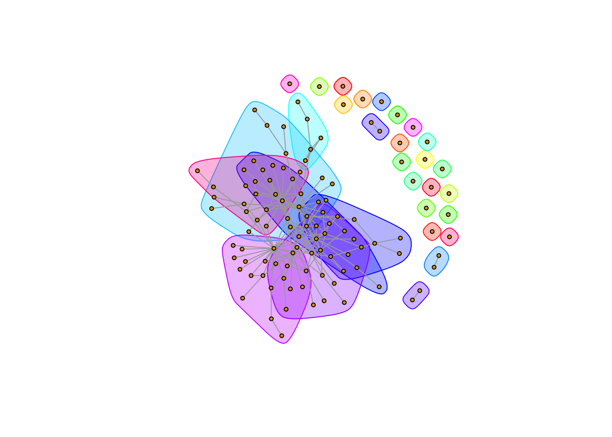
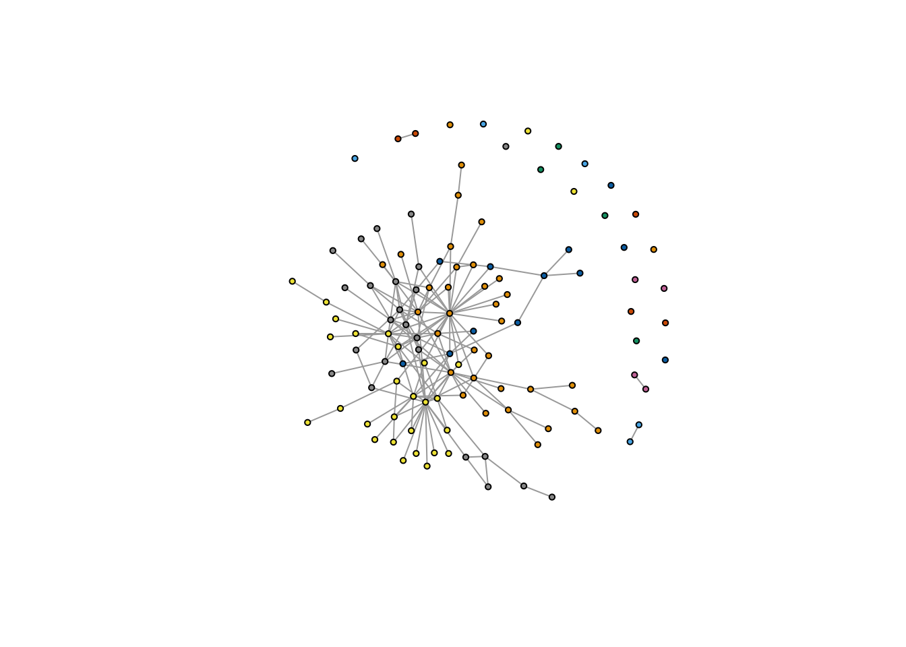
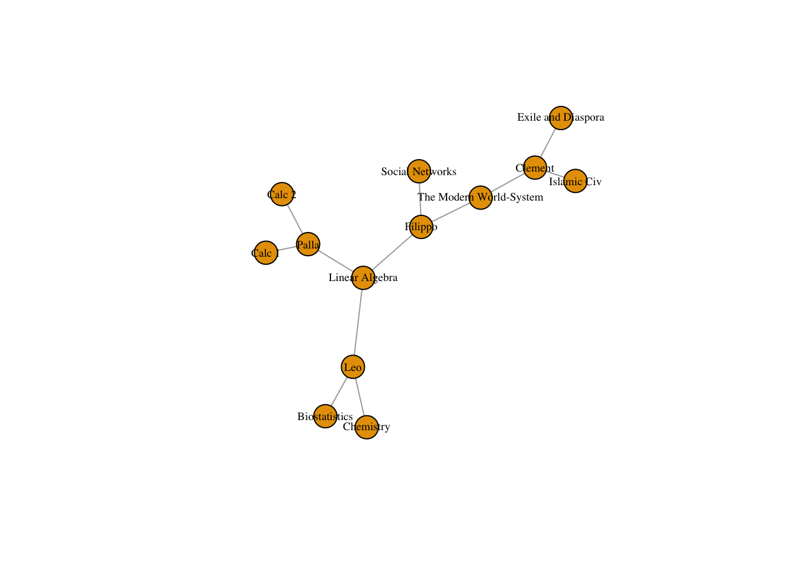
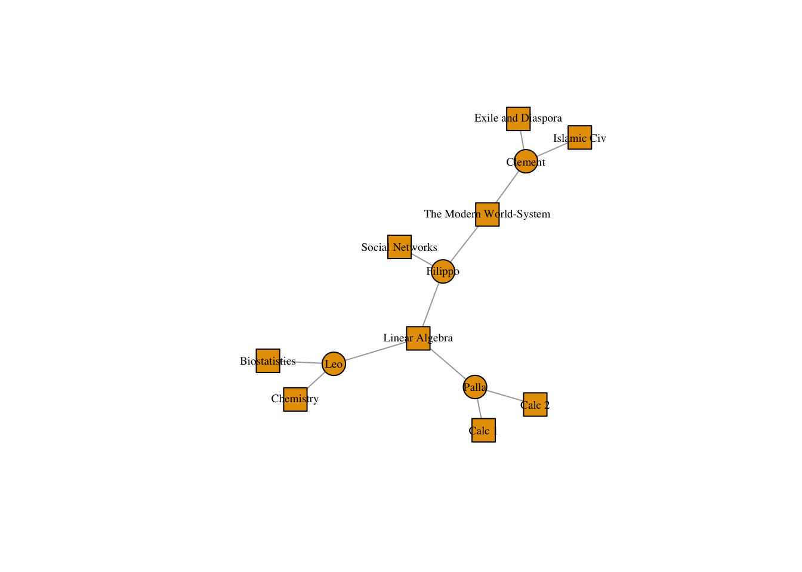
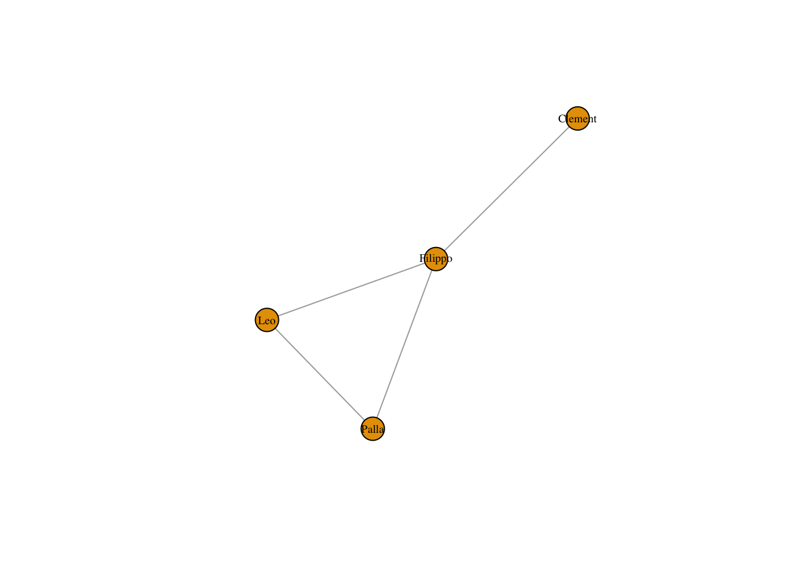
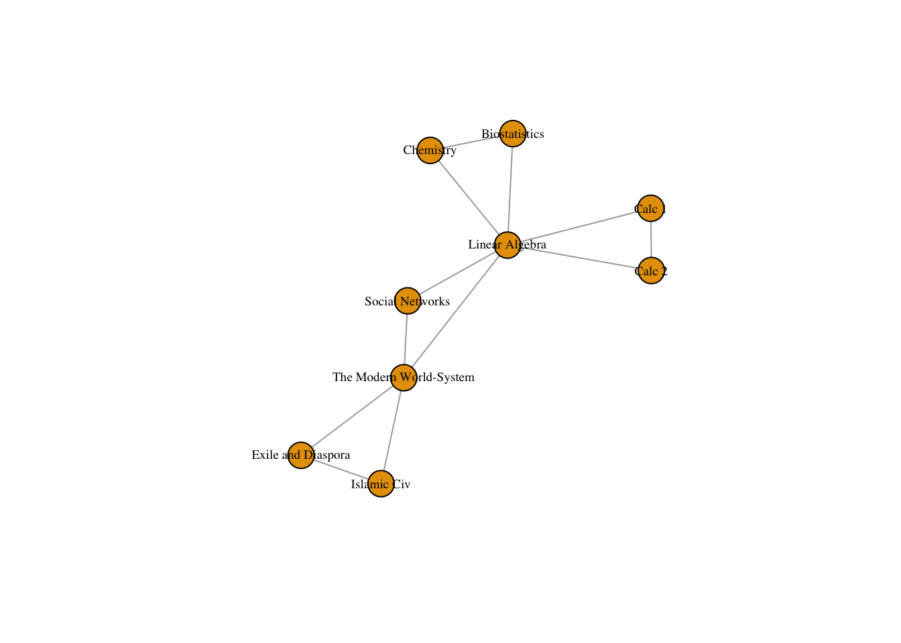

11 Group detection
We often just want to find distinct groups of people. We might not require that everyone in a group is connected - it is too stringent. Instead, we could define groups as sets of nodes who have a higher proportion of edges going inwards than outwards - that is, solidarity is strongest within the group.
There are a plethora of group detection algorithms in igraph. I will cover some of them. The full list is: edge.betweenness.community, fastgreedy.community, label.propagation.community, leading.eigenvector.community, multilevel.community, optimal.community, spinglass.community, and walktrap.community.
This webpage has a summary of their pros and cons for an older version of igraph: http://bommaritollc.com/2012/06/summary-community-detection-algorithms-igraph-0-6/
Essentially you should tailor your algorithm choice to your network. Certain algorithms are designed for directed or undirected graphs, and work better with small or large graphs. Each algorithm as its own igraph function. These functions produce lists with information about the algorithm results. Element 1 holds a vector that details which group each node is in, which I will refer to as the membership vector. Element 6 holds the modularity of the network given the group detection algorithm.
For undirected graphs, you can use the optimal or multilevel algorithms.
First we load our data.
library(igraph)
florentine_edgelist <- read.csv("http://www.markanthonyhoffman.com/downloads/florentine_marriage_edgelist.csv", stringsAsFactors = FALSE, row.names = 1)
florentine_attributes <- read.csv("http://www.markanthonyhoffman.com/downloads/florentine_attributes.csv", stringsAsFactors = FALSE)
marriageNet <- graph_from_data_frame(d = florentine_edgelist, directed = F, vertices = florentine_attributes)
marriageNet = simplify(marriageNet)communityMulti <- multilevel.community(marriageNet)For directed graphs, edge betweenness is generally your best bet, though the walktrap algorithm performs well too.
We might wish to visualize the group structure of networks to see how the algorithms divide the network. To do so, we have to first extract the membership vector and put it in a format the plot function understands.
communityMultiGroup <- communities(communityMulti)We can then use the mark.groups argument in plot to see the groups.
plot(marriageNet, vertex.size = 3, vertex.label = NA, mark.groups = communityMultiGroup)
Alternatively, we can just color the nodes by group membership. In this case, we can just use the membership vector.
V(marriageNet)$color <- membership(communityMulti)
plot(marriageNet, vertex.size = 3, vertex.label = NA)
This becomes less feasible as the number of groups increases!!
11.1 Modularity
Modularity takes a given group structure and calculates how separated the different groups are from each other. It therefore operationalizes our notion of groups above by calculating the proportion of ties that are within groups as opposed to between them. Networks with high modularity have dense connections between the nodes within modules but sparse connections between nodes in different modules.
We can think of modularity as both a measure of how effective a given grouping algorithm is - i.e. higher modularity means the alogrithm is identifying distinct, sociall separate groups. But it can also be thought of as a measure of the saliency of groups to the network in general. The higher modularity the more that groups structure the network. Modularity measures the extent to which a network can be divided into distinct modules or groups.
Getting a network’s modularity in igraph is easy!
communityMulti <- multilevel.community(marriageNet)
communityMulti$modularity## [1] 0.3662826 0.4929815 0.4992900We can either access the modularity score directly OR
modularity(communityMulti) # We can use the modularity() function on a group detection output.## [1] 0.4992911.2 Affiliation Data
This portion of the tutorial focuses on affiliation data. Individuals can be directly linked to one another by affections or interactions. We have spent most of the class so far detailing and analyzing the various types of direct relations.
However, they can also be linked through “affiliations”, that is, shared associations to groups or objects.
As an example, people might be tied by the classes they have taken together. Such data might look like:
Person, Classes Leo, Biostatistics, Chemistry, Linear Algebra Clement, Islamic Civilization, The Modern World-System, Exile and Diaspora Paula, Calc 1, Calc 2, Linear Algebra, Filippo, Linear Algebra, Social Networks, The Modern World-System
We can create a network with two types of nodes - one set of nodes will be people, the other classes. People, in this network, cannot be directly tied to each other. Rather they are co-affiliated with a class, which serves as the basis of their connection. Therefore, all ties will be between nodes of different types.
To create this network, we need to turn the above data into an edgelist, convert it to a matrix, and plot it in igraph.
Let’s start with the data.
classes_data <- data.frame(name = c("Leo", "Clement", "Palla", "Filippo"), class1 = c("Biostatistics","Islamic Civ", "Calc 1", "Linear Algebra"), class2 = c("Chemistry", "The Modern World-System", "Calc 2", "Social Networks"), class3 = c("Linear Algebra", "Exile and Diaspora", "Linear Algebra", "The Modern World-System"), stringsAsFactors = FALSE)
classes_data## name class1 class2 class3
## 1 Leo Biostatistics Chemistry Linear Algebra
## 2 Clement Islamic Civ The Modern World-System Exile and Diaspora
## 3 Palla Calc 1 Calc 2 Linear Algebra
## 4 Filippo Linear Algebra Social Networks The Modern World-SystemThe reshape packages will let us convert this type of data into an edgelist.
# install.packages("reshape2")
library(reshape2)
classes_data <- melt(classes_data, measure.vars = c("class1", "class2","class3"), value.name = "classes", variable.name = "order")The ?melt function turns so called “short form data” into “long form”. It takes the class variables and combines them into a single variable “classes”. We only need two columns, name and classes, so we use the subset function to select them. If we look at the data now, it is basically an edge list, in which people are on the left side and classes they are affiliated with on the right.
classes_data <- subset(classes_data, select = c("name", "classes"))Once we have such an edge list, we can then use the table function to turn it into an incidence matrix, which is what igraph needs to turn affiliation data into an igraph object.
classesMatrix = table(classes_data)
class(classesMatrix) <- "matrix" # And we convert it from a table to a matrix
# View(classesMatrix)In an incidence matrix, the rows are of one class of node, while columns are of another. The rows are generally people who are affiliated with groups in the columns.
Using the get.incidence() function will turn our matrix into a bipartite network.
classesNet <- graph.incidence(classesMatrix, mode = c("all"))
plot(classesNet, vertex.label.cex = .6, vertex.label.color = "black")
We can change the shape of nodes to highlight their type.
V(classesNet)$shape <- ifelse(V(classesNet)$type == FALSE, "circle", "square")
plot(classesNet,
vertex.label.cex = .6,
vertex.label.color = "black")
11.2.1 Unipartite Projection
Bipartite networks can be represented (or “projected”) as unipartite networks. In this case, either people will be the only nodes, and they will be connected if they share an affiliation (i.e. they are in the same group) OR groups willbe the only nodes and they will be connected if they share an affiliation to a person.
We can make the projection two ways - using the bipartite.projection() function in igraph, or by multiplying the incidence matrix by its transpose (or vise versa).
The mathematical operation to make a person-to-person projection is to multiply the initial matrix by its transpose. In R that looks like:
personMatrix = classesMatrix %*% t(classesMatrix)
# View(personMatrix)where the t() function transposes the matrix that is passed to it and %*% performs matrix multiplication.
The diagonal of this new matrix tells us the number of groups each person is affiliated with, but we set it to 0 using the ?diag function.
diag(personMatrix) <- 0
# View(personMatrix)To get the group-to-group matrix, we multiply the transpose by the initial matrix (reverse!)
groupMatrix = t(classesMatrix) %*% classesMatrix
# View(groupMatrix) # The diagonal details the number of people in each class
diag(groupMatrix) <- 0 # we again set it to 0Both of these operations turn our rectangular incidence matrix into a square adjacency matrix. Order matters. Now that we have adjacency matrices can use the graph.adjacency() function to turn them into network objects.
personNet <- graph.adjacency(personMatrix, mode = "undirected")
groupNet <- graph.adjacency(groupMatrix, mode = "undirected")
plot(personNet, vertex.label.cex = .6, vertex.label.color = "black")
plot(groupNet, vertex.label.cex = .6, vertex.label.color = "black")
We can analyze these networks just like we would any other network with a single node type.